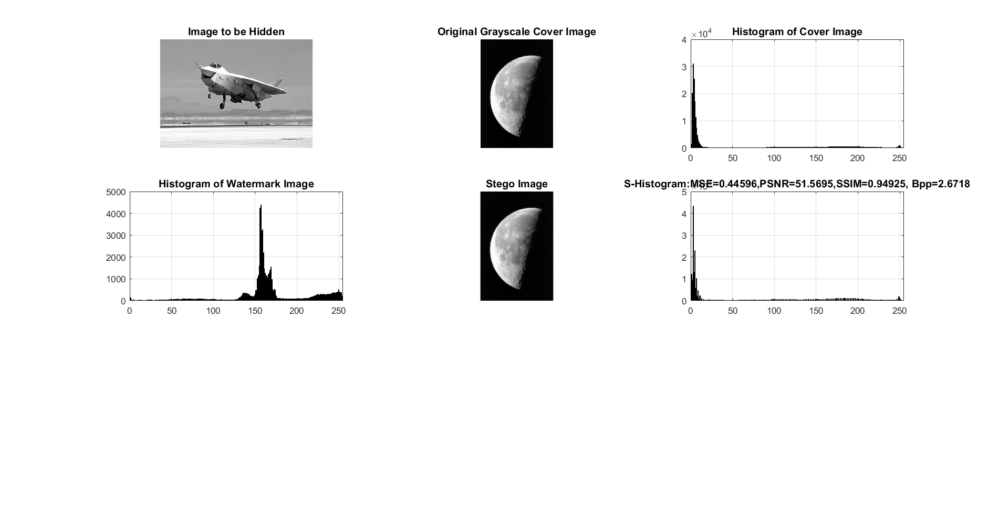

clc;
close all;
imtool close all;
clear;
workspace;
fontSize = 12;
fileName='moon.tif';
originalImage = imread(fileName);
[visibleRows, visibleColumns, numberOfColorChannels] = size(originalImage);
if numberOfColorChannels > 1
originalImage = originalImage(:,:,1);
end
messageFileName='300.jpg';
hiddenImage = imread(messageFileName);
[hiddenRows, hiddenColumns, numberOfColorChannels] = size(hiddenImage);
if numberOfColorChannels > 1
hiddenImage = hiddenImage(:,:,1);
end
prompt = 'Enter number of LSB bit planes to use (1 - 4) ';
dialogTitle = 'Enter Bit Plane to Replace';
numberOfLines = 1;
defaultResponse = {'1'};
bitToSet = str2double(cell2mat(inputdlg(prompt, dialogTitle, numberOfLines, defaultResponse)));
if bitToSet > 4
warning('Maximum of 4 LSB bitplanes can be replaced. Program aborted!')
return
end
extraMetadata = 48;
maximumBitCapacityOfCover = bitToSet*visibleRows*visibleColumns;
binaryWatermarkSize = hiddenRows*hiddenColumns;
grayWatermarkSize = binaryWatermarkSize * 8;
embedsize = grayWatermarkSize + extraMetadata;
if embedsize > maximumBitCapacityOfCover
warning('Watermark size is too big. Increase number of bit planes or reduce watermark size. Program aborted!')
return
end
vectorWatermark = zeros(embedsize,1,'uint8');
for i = 1:16
vectorWatermark(i) = 255*bitget(hiddenRows, i);
end
for i = 1:16
vectorWatermark(i+16) = 255*bitget(hiddenColumns, i);
end
for i = 1:16
vectorWatermark(i+32) = 255*bitget(bitToSet, i);
end
size(vectorWatermark);
count=0;
for i=1:hiddenRows
for j= 1 : hiddenColumns
thisByteArray = transpose(dec2bin(uint8(hiddenImage(i,j)),8));
thisByteArray = thisByteArray(:);
N = length(thisByteArray);
for k = 1:N
if(thisByteArray(k) == '1')
vectorWatermark(48+k + count) = 1;
else
vectorWatermark(48+k + count) = 0;
end
end
count = count+1;
end
end
stego = originalImage;
sizeOF_STEGO = size(stego);
msize=size(vectorWatermark);
msize1 = msize(1);
index = 1;row=1;col=1;
embeddingrate=0;
a=1;
i=0;j=0;
for row=1:visibleRows
for col=1:visibleColumns
if a < 49
stego(row,col) = bitset(stego(row,col),1, vectorWatermark(a));
a=a+1;
else
break;
end
if a == 49
break;
end
end
if a == 49
break;
end
end
col= col+1;
for row=row:visibleRows
for col=1:visibleColumns
if a < msize1
for bitplane= 1:bitToSet
stego(row,col) = bitset(stego(row,col),1, vectorWatermark(a));
a=a+1;
end
else
break;
end
if a == msize1
break;
end
end
embeddingrate = embedsize/(visibleRows*visibleColumns);
if a == msize1
break;
end
end
mse = immse(originalImage,stego);
p=psnr(originalImage,stego);
[mssim,map] = ssim(double(originalImage),double(stego));
mssim;
result= strcat('S-Histogram:','MSE=',num2str(mse),',PSNR=',num2str(p),',SSIM=',num2str(mssim),', Bpp=',num2str(embeddingrate))
subplot(3, 3, 1);
imshow(hiddenImage, []);
title('Image to be Hidden', 'FontSize', fontSize);
subplot(3, 3, 2);
imshow(originalImage, []);
title('Original Grayscale Cover Image', 'FontSize', fontSize);
set(gcf, 'units','normalized','outerposition',[0 0 1 1]);
set(gcf,'name','Naive LSB','numbertitle','off')
[pixelCount, grayLevels] = imhist(originalImage);
subplot(3, 3, 3);
bar(pixelCount);
title('Histogram of Cover Image', 'FontSize', fontSize);
xlim([0 grayLevels(end)]);
grid on;
[pixelCount, grayLevels] = imhist(hiddenImage);
subplot(3, 3, 4);
bar(pixelCount);
title('Histogram of Watermark Image', 'FontSize', fontSize);
xlim([0 grayLevels(end)]);
grid on;
subplot(3, 3, 5);
imshow(stego, []);
title('Stego Image', 'FontSize', fontSize);
[pixelCount, grayLevels] = imhist(stego);
subplot(3, 3, 6);
bar(pixelCount);
title(result, 'FontSize', fontSize);
xlim([0 grayLevels(end)]);
grid on;
result =
S-Histogram:MSE=0.44596,PSNR=51.5695,SSIM=0.94925, Bpp=2.6718
